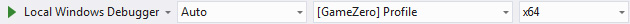
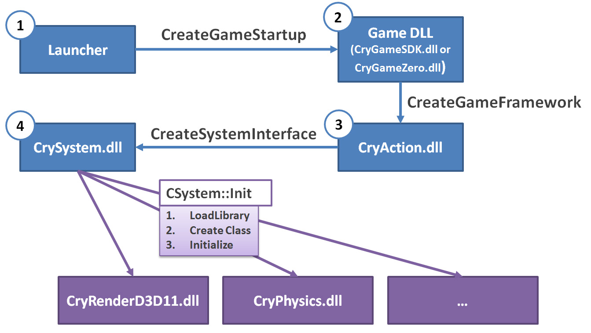

Здание GameZero
Предполагая, что вы знакомы с Начало работы с игровым кодом руководство и основная концепция, лежащая в основе GameZero, выберите [GameZero] Профиль, x64 из настроек конфигурации для компиляции CryGameZero.dll

Процедура загрузки
- Sandbox/Программа запуска считывает system.cfg какую папку с игрой нужно загрузить - sys_game_folder=GameZero
- game.cfg внутри папки игры указывает, какую игру DLL необходимо загрузить - sys_dll_game = CryGameZero
- DLL Запускается конвейер загрузки, как показано ниже.
